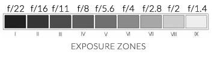

Tone Curves
Why We Need Tone Curves: Linear v. Logarithmic Light
Image sensors record data linearly. For example, say a camera sensor is recording a level of incoming light at 50 out of 255. If the amount of light doubles, the sensor will record the new intensity as double: 100 out of 255. The human eye, however, reads light logarithmically: it is more sensitive to darker tones than to lighter tones. This means that doubling the intensity of darker tones as more of an effect on pixel values than doubling brighter tones. For example, if the human eye "read" an initial incoming light value of 50, and the amount of light doubled, the eye would "read" the new brighter value as 125 rather than 100. Because of its sensitivity to darker tones, the eye “allots” more integer values to darker values, which results in increasing relative pixel intensity faster than would a linear scale. Once you get to higher pixel values, doubling intensity can result in a pixel value increase of less than 10. For an illustration of this, look at the figure on the right.
On a logarithmic scale, relative differences such as doubling or halving the luminance (changing it by one exposure zone or aperture) occupy the same distance, independently of the absolute luminance magnitude. This is best illustrated by the concept of lens aperture. Each aperture stop is an exponential increase or decrease of image exposure: a step wider doubles the amount of incoming light while a step narrower halves it. The numbers corresponding to f-stops are not linear, because aperture itself functions on a logaraithmic scale. Each exposure zone (corresponding to an f-stop) is related to the next by a factor of two. This corresponds to the amount of light, not the integer value associated with the light level (the latter is a linear relationship).
Applying Tone Curves
If you have a predominantly dark image, it is desirable to expand the pixel levels in order to increase perceived luminance. This can be achieved by performing a power-law transformation with a fractional exponent (a gamma value less than one). Such a transformation increases image dynamic range. A power-law transformation maps linear input values onto a set of logarithmic output values. In other words, it maps the linear sensor data back to a logarithmic range that simluates how the scene was seen by the human eye.
Gamma adjustments can increase or decrease contrast in order to expose detail or enhance image interestingness and detail. Using a power-law transformation with a gamma value greater than one will increase overall image contrast by contracting the pixel levels. Such a transformation decreases the dynamic range of the pixels.
Power-Law Transformation
s = crγ
Where s= output pixel level, r= input pixel level, and γ= gamma value
A tone curve allows targeted adjustments of image tonal regions. For example, the tone curve can be used to brighten just the shadows. An s-shaped tone curve has the overall effect of increasing contrast, as lights get pulled lighter and darks darker.

The default tone curve for an image is a straight line overlaying the image histogram. This represents a linear relationship between input and output, meaning no pixel values have been "mapped" to a different output. Below are 4 common tone curves which "map" pixel values to a different range in order to adjust image output.